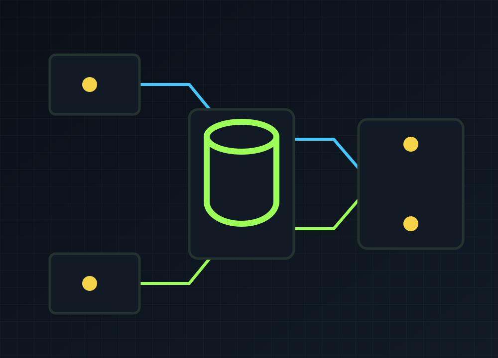
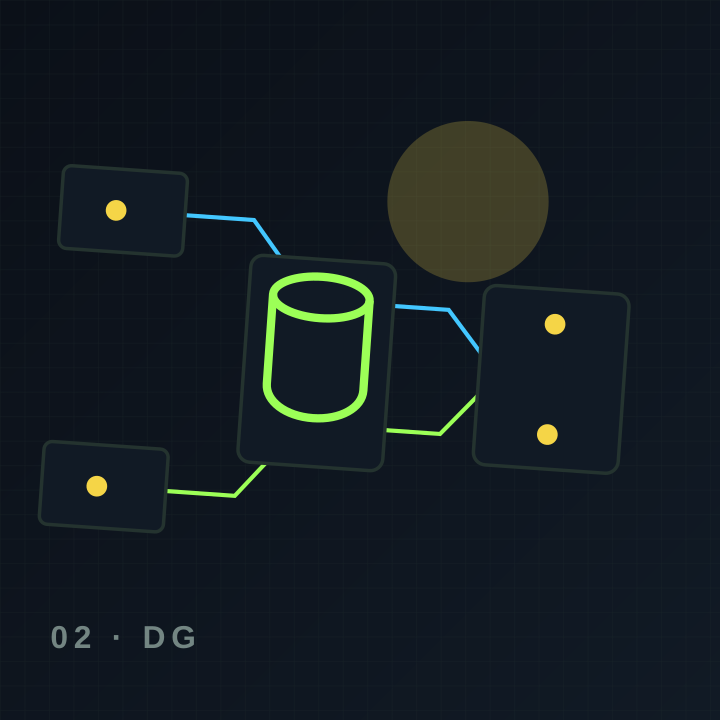
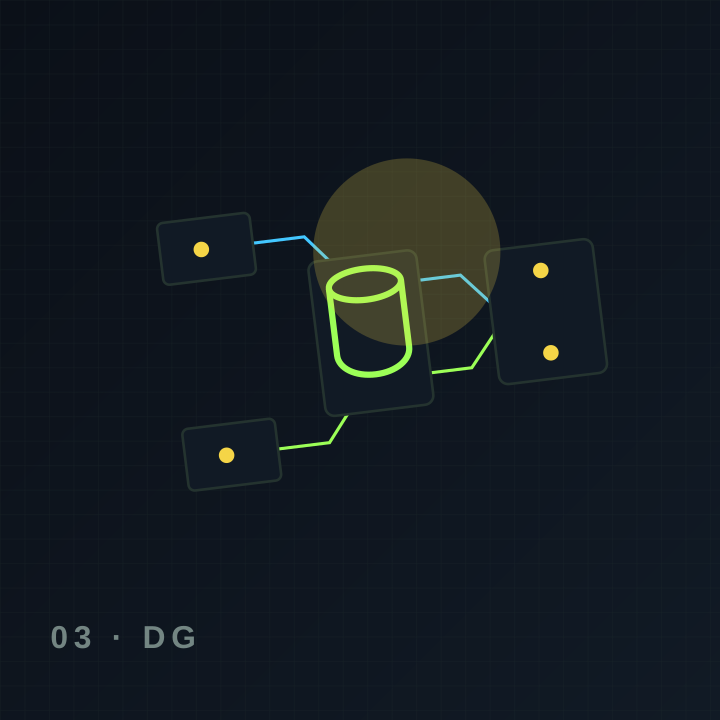

RAG híbrido
Embeddings, BM25, metadatos y reranking local.
Plataforma RAG agéntica on-premise para analizar políticas, requerimientos, Azure DevOps, documentación y metadatos Oracle.

DataGov Local coordina agentes especializados para recuperar evidencia, analizar requerimientos, descubrir estructuras de datos y generar modelos, DDL, diccionarios y documentación sin enviar información sensible a APIs externas.
La arquitectura responde a la descripción del alumno, no a una plantilla genérica.
Embeddings, BM25, metadatos y reranking local.
Orquesta agentes y exige evidencia para cada resultado.
ERD, DDL, Excel, presentaciones, documentación y linaje.
RBAC, ACL, auditoría, Docker, secretos y control humano.
Ilustraciones vectoriales locales, rápidas y editables. No dependen de bancos externos.

Embeddings, BM25, metadatos y reranking local.

Orquesta agentes y exige evidencia para cada resultado.

ERD, DDL, Excel, presentaciones, documentación y linaje.
Cada etapa define qué ocurre, qué recibe la persona y cuál es el siguiente paso.
Docling procesa documentos y conserva metadatos.
Qdrant + búsqueda lexical + filtros + reranking.
LangGraph asigna tareas y valida dependencias.
Humano revisa acciones críticas y publica artefactos.
Contenido estructurado para personas, buscadores y motores de respuesta.
La arquitectura objetivo bloquea salida para componentes sensibles y ejecuta modelos, vector store y procesamiento localmente.
Cada conclusión debe citar fuentes, separar hechos de recomendaciones y pasar validaciones y aprobación humana.
No. La entrega web representa UX, arquitectura y roadmap; las integraciones requieren credenciales, red y desarrollo del MVP.
El diseño ya contempla contenido, navegación, accesibilidad, metadatos, respuestas directas y estructura técnica. Las integraciones reales se conectan con credenciales del negocio.